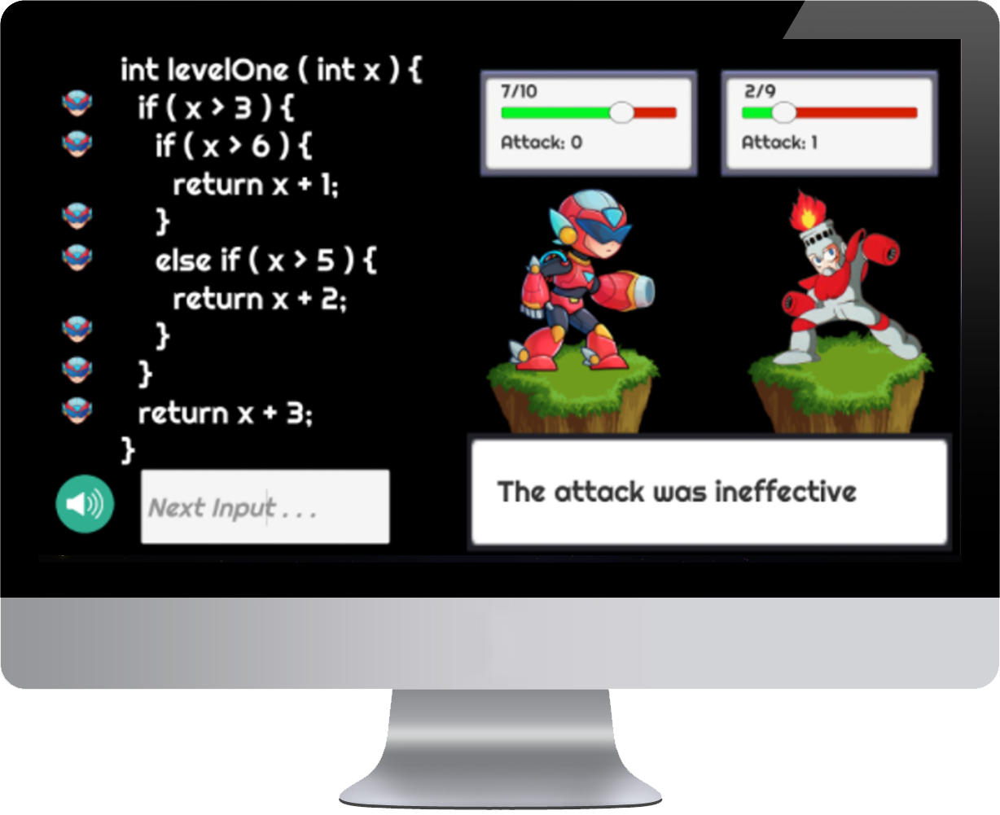

CoverBot
Gamifying Software Testing Education
- Sept. 2019 - June 2020
- Role: Research Assistant
- Scope: Product Design, UI/UX Design

Background
I've been using all sorts of different technology since I was born,
which is probably why my eyesight is so poor. Unfortunately, because I
rely on a vast range of software and hardware for my personal and
professional life, I've grown accustomed to programs, games, and
applications running smoothly. However, we both know that this is
rarely the case! Many people experience glitches or bugs in their
software, with not a clue on how to fix them.
Although they may be minor inconveniences to our daily lives, bugs
in code can be extremely dangerous elsewhere. For example,
faulty software used in airplanes or banks can cause tragic accidents
or dangerous data leaks. Here's exactly where the problem lies... why
do we have to deal with these bugs at all?
The Problem
Here's the catch. We shouldn't have to! The importance of testing our
code is not emphasized enough in both the industry and in coding
courses. In fact, research has shown that many professional programmers
find testing to be “trivial and uninteresting”. How can we improve the
quality of our code by effectively testing it before it's placed into
the market? Like most things, a great idea is to tackle it at the source
: education.
A Solution
We can utilize gamification to keep students engaged and motivated
when learning about software testing techniques, which will result
in better programmers, reducing the amount of bugs in our software.
To narrow our scope, we first focused on a specific sector of software
testing before branching out. We chose to gamify statement coverage.
Context and Process
What brought me here was the Early Research Scholars Program at UC San Diego.
I applied for this program at the end of my freshman year, when I was still
scared of getting lost on campus! It was one of the greatest decisions of my
college career because it was an enlightening research experience.
Through an in depth process of defining a problem, reading research articles,
ideation, and testing with users, we were able to create a small game about
statement coverage. The game consisted of a few gamification techniques that
were rated to be the most effective, to name a few: reward system, progression, feedback.
My contribution spanned across game design, sound design, level design,
ecording meeting notes, and user testing.
Given the time frame of the program, our initial game was purely on the terminal.
However, it didn't really look like a game, and we decided that it just wasn't
practical enough to get decent data.
We shifted toward a game with a better GUI and developed it with Unity and C#.
There was definitely a time crunch, but we managed to pull it off! Through several
intermediate user testing, we improved our game slowly, changing color
schemes, sounds, and graphics. Here is the final version of our game.
To test the effectiveness of our game, we had to conduct surveys where participants played both
the gamified version and non-gamified version of the program. The reason we had to create a
non-gamified version was because we needed a control for our experiment that at least in the
same scope as our game (we just took out a few gamification features)